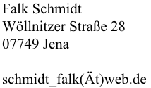

Datenschutzerklärung
Diese Datenschutzerklärung klärt Sie über die Art, den Umfang und Zweck der Verarbeitung von personenbezogenen Daten
(nachfolgend kurz „Daten“) im Rahmen der Erbringung unserer Leistungen sowie innerhalb unseres Onlineangebotes und
der mit ihm verbundenen Webseiten, Funktionen und Inhalte sowie externen Onlinepräsenzen, wie z.B. unser Social Media
Profile auf (nachfolgend gemeinsam bezeichnet als „Onlineangebot“). Im Hinblick auf die verwendeten Begrifflichkeiten,
wie z.B. „Verarbeitung“ oder „Verantwortlicher“ verweisen wir auf die Definitionen im Art. 4 der Datenschutzgrundverordnung (DSGVO).
Verantwortlicher

Arten der verarbeiteten Daten
- Bestandsdaten (z.B., Personen-Stammdaten, Namen oder Adressen).
- Kontaktdaten (z.B., E-Mail, Telefonnummern).
- Inhaltsdaten (z.B., Texteingaben, Fotografien, Videos).
- Nutzungsdaten (z.B., besuchte Webseiten, Interesse an Inhalten, Zugriffszeiten).
- Meta-/Kommunikationsdaten (z.B., Geräte-Informationen, IP-Adressen).
Kategorien betroffener Personen
Besucher und Nutzer des Onlineangebotes (Nachfolgend bezeichnen wir die betroffenen Personen zusammenfassend auch als „Nutzer“).
Zweck der Verarbeitung
- Zurverfügungstellung des Onlineangebotes, seiner Funktionen und Inhalte.
- Beantwortung von Kontaktanfragen und Kommunikation mit Nutzern.
- Sicherheitsmaßnahmen.
- Reichweitenmessung/Marketing
Verwendete Begrifflichkeiten
„Personenbezogene Daten“ sind alle Informationen, die sich auf eine identifizierte oder identifizierbare natürliche Person (im Folgenden „betroffene Person“) beziehen; als identifizierbar wird eine natürliche Person angesehen, die
direkt oder indirekt, insbesondere mittels Zuordnung zu einer Kennung wie einem Namen, zu einer Kennnummer, zu Standortdaten, zu einer Online-Kennung (z.B. Cookie) oder zu einem oder mehreren besonderen Merkmalen identifiziert werden
kann, die Ausdruck der physischen, physiologischen, genetischen, psychischen, wirtschaftlichen, kulturellen oder sozialen Identität dieser natürlichen Person sind.
„Verarbeitung“ ist jeder mit oder ohne Hilfe automatisierter Verfahren ausgeführte Vorgang oder jede solche Vorgangsreihe im Zusammenhang mit personenbezogenen Daten. Der Begriff reicht weit und umfasst praktisch jeden Umgang mit Daten.
„Pseudonymisierung“ die Verarbeitung personenbezogener Daten in einer Weise, dass die personenbezogenen Daten ohne Hinzuziehung zusätzlicher Informationen nicht mehr einer spezifischen betroffenen Person zugeordnet werden können, sofern
diese zusätzlichen Informationen gesondert aufbewahrt werden und technischen und organisatorischen Maßnahmen unterliegen, die gewährleisten, dass die personenbezogenen Daten nicht einer identifizierten oder identifizierbaren natürlichen
Person zugewiesen werden.
„Profiling“ jede Art der automatisierten Verarbeitung personenbezogener Daten, die darin besteht, dass diese personenbezogenen Daten verwendet werden, um bestimmte persönliche Aspekte, die sich auf eine natürliche Person beziehen, zu
bewerten, insbesondere um Aspekte bezüglich Arbeitsleistung, wirtschaftliche Lage, Gesundheit, persönliche Vorlieben, Interessen, Zuverlässigkeit, Verhalten, Aufenthaltsort oder Ortswechsel dieser natürlichen Person zu analysieren oder
vorherzusagen.
Als „Verantwortlicher“ wird die natürliche oder juristische Person, Behörde, Einrichtung oder andere Stelle, die allein oder gemeinsam mit anderen über die Zwecke und Mittel der Verarbeitung von personenbezogenen Daten entscheidet,
bezeichnet.
„Auftragsverarbeiter“ eine natürliche oder juristische Person, Behörde, Einrichtung oder andere Stelle, die personenbezogene Daten im Auftrag des Verantwortlichen verarbeitet.
Maßgebliche Rechtsgrundlagen
Nach Maßgabe des Art. 13 DSGVO teilen wir Ihnen die Rechtsgrundlagen unserer Datenverarbeitungen mit. Für Nutzer aus dem Geltungsbereich der Datenschutzgrundverordnung (DSGVO), d.h. der EU und des EWG gilt, sofern die Rechtsgrundlage in
der Datenschutzerklärung nicht genannt wird, Folgendes:
Die Rechtsgrundlage für die Einholung von Einwilligungen ist Art. 6 Abs. 1 lit. a und Art. 7 DSGVO;
Die Rechtsgrundlage für die Verarbeitung zur Erfüllung unserer Leistungen und Durchführung vertraglicher Maßnahmen sowie Beantwortung von Anfragen ist Art. 6 Abs. 1 lit. b DSGVO;
Die Rechtsgrundlage für die Verarbeitung zur Erfüllung unserer rechtlichen Verpflichtungen ist Art. 6 Abs. 1 lit. c DSGVO;
Für den Fall, dass lebenswichtige Interessen der betroffenen Person oder einer anderen natürlichen Person eine Verarbeitung personenbezogener Daten erforderlich machen, dient Art. 6 Abs. 1 lit. d DSGVO als Rechtsgrundlage.
Die Rechtsgrundlage für die erforderliche Verarbeitung zur Wahrnehmung einer Aufgabe, die im öffentlichen Interesse liegt oder in Ausübung öffentlicher Gewalt erfolgt, die dem Verantwortlichen übertragen wurde ist Art. 6 Abs. 1 lit. e
DSGVO.
Die Rechtsgrundlage für die Verarbeitung zur Wahrung unserer berechtigten Interessen ist Art. 6 Abs. 1 lit. f DSGVO.
Die Verarbeitung von Daten zu anderen Zwecken als denen, zu denen sie ehoben wurden, bestimmt sich nach den Vorgaben des Art 6 Abs. 4 DSGVO.
Die Verarbeitung von besonderen Kategorien von Daten (entsprechend Art. 9 Abs. 1 DSGVO) bestimmt sich nach den Vorgaben des Art. 9 Abs. 2 DSGVO.
Sicherheitsmaßnahmen
Wir treffen nach Maßgabe der gesetzlichen Vorgabenunter Berücksichtigung des Stands der Technik, der Implementierungskosten und der Art, des Umfangs, der Umstände und der Zwecke der Verarbeitung sowie der unterschiedlichen
Eintrittswahrscheinlichkeit und Schwere des Risikos für die Rechte und Freiheiten natürlicher Personen, geeignete technische und organisatorische Maßnahmen, um ein dem Risiko angemessenes Schutzniveau zu gewährleisten.
Zu den Maßnahmen gehören insbesondere die Sicherung der Vertraulichkeit, Integrität und Verfügbarkeit von Daten durch Kontrolle des physischen Zugangs zu den Daten, als auch des sie betreffenden Zugriffs, der Eingabe, Weitergabe, der
Sicherung der Verfügbarkeit und ihrer Trennung. Des Weiteren haben wir Verfahren eingerichtet, die eine Wahrnehmung von Betroffenenrechten, Löschung von Daten und Reaktion auf Gefährdung der Daten gewährleisten. Ferner berücksichtigen
wir den Schutz personenbezogener Daten bereits bei der Entwicklung, bzw. Auswahl von Hardware, Software sowie Verfahren, entsprechend dem Prinzip des Datenschutzes durch Technikgestaltung und durch datenschutzfreundliche
Voreinstellungen.
Zusammenarbeit mit Auftragsverarbeitern, gemeinsam Verantwortlichen und Dritten
Sofern wir im Rahmen unserer Verarbeitung Daten gegenüber anderen Personen und Unternehmen (Auftragsverarbeitern, gemeinsam Verantwortlichen oder Dritten) offenbaren, sie an diese übermitteln oder ihnen sonst Zugriff auf die Daten
gewähren, erfolgt dies nur auf Grundlage einer gesetzlichen Erlaubnis (z.B. wenn eine Übermittlung der Daten an Dritte, wie an Zahlungsdienstleister, zur Vertragserfüllung erforderlich ist), Nutzer eingewilligt haben, eine rechtliche
Verpflichtung dies vorsieht oder auf Grundlage unserer berechtigten Interessen (z.B. beim Einsatz von Beauftragten, Webhostern, etc.).
Sofern wir Daten anderen Unternehmen unserer Unternehmensgruppe offenbaren, übermitteln oder ihnen sonst den Zugriff gewähren, erfolgt dies insbesondere zu administrativen Zwecken als berechtigtes Interesse und darüberhinausgehend auf
einer den gesetzlichen Vorgaben entsprechenden Grundlage.
Übermittlungen in Drittländer
Sofern wir Daten in einem Drittland (d.h. außerhalb der Europäischen Union (EU), des Europäischen Wirtschaftsraums (EWR) oder der Schweizer Eidgenossenschaft) verarbeiten oder dies im Rahmen der Inanspruchnahme von Diensten Dritter oder
Offenlegung, bzw. Übermittlung von Daten an andere Personen oder Unternehmen geschieht, erfolgt dies nur, wenn es zur Erfüllung unserer (vor)vertraglichen Pflichten, auf Grundlage Ihrer Einwilligung, aufgrund einer rechtlichen
Verpflichtung oder auf Grundlage unserer berechtigten Interessen geschieht. Vorbehaltlich gesetzlicher oder vertraglicher Erlaubnisse, verarbeiten oder lassen wir die Daten in einem Drittland nur beim Vorliegen der gesetzlichen
Voraussetzungen. D.h. die Verarbeitung erfolgt z.B. auf Grundlage besonderer Garantien, wie der offiziell anerkannten Feststellung eines der EU entsprechenden Datenschutzniveaus (z.B. für die USA durch das „Privacy Shield“) oder
Beachtung offiziell anerkannter spezieller vertraglicher Verpflichtungen.
Rechte der betroffenen Personen
Sie haben das Recht, eine Bestätigung darüber zu verlangen, ob betreffende Daten verarbeitet werden und auf Auskunft über diese Daten sowie auf weitere Informationen und Kopie der Daten entsprechend den gesetzlichen Vorgaben.
Sie haben entsprechend. den gesetzlichen Vorgaben das Recht, die Vervollständigung der Sie betreffenden Daten oder die Berichtigung der Sie betreffenden unrichtigen Daten zu verlangen.
Sie haben nach Maßgabe der gesetzlichen Vorgaben das Recht zu verlangen, dass betreffende Daten unverzüglich gelöscht werden, bzw. alternativ nach Maßgabe der gesetzlichen Vorgaben eine Einschränkung der Verarbeitung der Daten zu
verlangen.
Sie haben das Recht zu verlangen, dass die Sie betreffenden Daten, die Sie uns bereitgestellt haben nach Maßgabe der gesetzlichen Vorgaben zu erhalten und deren Übermittlung an andere Verantwortliche zu fordern.
Sie haben ferner nach Maßgabe der gesetzlichen Vorgaben das Recht, eine Beschwerde bei der zuständigen Aufsichtsbehörde einzureichen.
Widerrufsrecht
Sie haben das Recht, erteilte Einwilligungen mit Wirkung für die Zukunft zu widerrufen.
Widerspruchsrecht
Sie können der künftigen Verarbeitung der Sie betreffenden Daten nach Maßgabe der gesetzlichen Vorgaben jederzeit widersprechen. Der Widerspruch kann insbesondere gegen die Verarbeitung für Zwecke der Direktwerbung erfolgen.
Cookies und Widerspruchsrecht bei Direktwerbung
Als „Cookies“ werden kleine Dateien bezeichnet, die auf Rechnern der Nutzer gespeichert werden. Innerhalb der Cookies können unterschiedliche Angaben gespeichert werden. Ein Cookie dient primär dazu, die Angaben zu einem Nutzer (bzw.
dem Gerät auf dem das Cookie gespeichert ist) während oder auch nach seinem Besuch innerhalb eines Onlineangebotes zu speichern. Als temporäre Cookies, bzw. „Session-Cookies“ oder „transiente Cookies“, werden Cookies bezeichnet, die
gelöscht werden, nachdem ein Nutzer ein Onlineangebot verlässt und seinen Browser schließt. In einem solchen Cookie kann z.B. der Inhalt eines Warenkorbs in einem Onlineshop oder ein Login-Status gespeichert werden. Als „permanent“ oder
„persistent“ werden Cookies bezeichnet, die auch nach dem Schließen des Browsers gespeichert bleiben. So kann z.B. der Login-Status gespeichert werden, wenn die Nutzer diese nach mehreren Tagen aufsuchen. Ebenso können in einem solchen
Cookie die Interessen der
Nutzer gespeichert werden, die für Reichweitenmessung oder Marketingzwecke verwendet werden. Als „Third-Party-Cookie“ werden Cookies bezeichnet, die von anderen Anbietern als dem Verantwortlichen, der das
Onlineangebot betreibt, angeboten werden (andernfalls, wenn es nur dessen Cookies sind spricht man von „First-Party Cookies“).
Wir können temporäre und permanente Cookies einsetzen und klären hierüber im Rahmen unserer Datenschutzerklärung auf.
Falls die Nutzer nicht möchten, dass Cookies auf ihrem Rechner gespeichert werden, werden sie gebeten die entsprechende Option in den Systemeinstellungen ihres Browsers zu deaktivieren. Gespeicherte Cookies können in den
Systemeinstellungen des Browsers gelöscht werden. Der Ausschluss von Cookies kann zu Funktionseinschränkungen dieses Onlineangebotes führen.
Ein genereller Widerspruch gegen den Einsatz der zu Zwecken des Onlinemarketing eingesetzten Cookies kann bei einer Vielzahl der Dienste, vor allem im Fall des Trackings, über die US-amerikanische Seite http://www.aboutads.info/choices/
oder die EU-Seite http://www.youronlinechoices.com/ erklärt werden. Des Weiteren kann die Speicherung von Cookies mittels deren Abschaltung in den Einstellungen des Browsers erreicht
werden. Bitte beachten Sie, dass dann gegebenenfalls nicht alle Funktionen dieses Onlineangebotes genutzt werden können.
Löschung von Daten
Die von uns verarbeiteten Daten werden nach Maßgabe der gesetzlichen Vorgaben gelöscht oder in ihrer Verarbeitung eingeschränkt. Sofern nicht im Rahmen dieser Datenschutzerklärung ausdrücklich angegeben, werden die bei uns
gespeicherten Daten gelöscht, sobald sie für ihre Zweckbestimmung nicht mehr erforderlich sind und der Löschung keine gesetzlichen Aufbewahrungspflichten entgegenstehen.
Sofern die Daten nicht gelöscht werden, weil sie für andere und gesetzlich zulässige Zwecke erforderlich sind, wird deren Verarbeitung eingeschränkt. D.h. die Daten werden gesperrt und nicht für andere Zwecke verarbeitet. Das gilt
z.B. für Daten, die aus handels- oder steuerrechtlichen Gründen aufbewahrt werden müssen.
Änderungen und Aktualisierungen der Datenschutzerklärung
Wir bitten Sie sich regelmäßig über den Inhalt unserer Datenschutzerklärung zu informieren. Wir passen die Datenschutzerklärung an, sobald die Änderungen der von uns durchgeführten Datenverarbeitungen dies erforderlich machen. Wir
informieren Sie, sobald durch die Änderungen eine Mitwirkungshandlung Ihrerseits (z.B. Einwilligung) oder eine sonstige individuelle Benachrichtigung erforderlich wird.
Kontaktaufnahme
Bei der Kontaktaufnahme mit uns (z.B. per Kontaktformular, E-Mail, Telefon oder via sozialer Medien) werden die Angaben des Nutzers zur Bearbeitung der Kontaktanfrage und deren Abwicklung gem. Art. 6 Abs. 1 lit. b. (im Rahmen
vertraglicher-/vorvertraglicher Beziehungen), Art. 6 Abs. 1 lit. f. (andere Anfragen) DSGVO verarbeitet. Die Angaben der Nutzer können in einem Customer-Relationship-Management System ("CRM System") oder vergleichbarer
Anfragenorganisation gespeichert werden.
Wir löschen die Anfragen, sofern diese nicht mehr erforderlich sind. Wir überprüfen die Erforderlichkeit alle zwei Jahre; Ferner gelten die gesetzlichen Archivierungspflichten.
Hosting und E-Mail-Versand
Die von uns in Anspruch genommenen Hosting-Leistungen dienen der Zurverfügungstellung der folgenden Leistungen: Infrastruktur- und Plattformdienstleistungen, Rechenkapazität, Speicherplatz und Datenbankdienste, E-Mail-Versand,
Sicherheitsleistungen sowie technische Wartungsleistungen, die wir zum Zwecke des Betriebs dieses Onlineangebotes einsetzen.
Hierbei verarbeiten wir, bzw. unser Hostinganbieter Bestandsdaten, Kontaktdaten, Inhaltsdaten, Vertragsdaten, Nutzungsdaten, Meta- und Kommunikationsdaten von Kunden, Interessenten und Besuchern dieses Onlineangebotes auf Grundlage
unserer berechtigten Interessen an einer effizienten und sicheren Zurverfügungstellung dieses Onlineangebotes gem. Art. 6 Abs. 1 lit. f DSGVO i.V.m. Art. 28 DSGVO (Abschluss Auftragsverarbeitungsvertrag).
Erhebung von Zugriffsdaten und Logfiles
Wir, bzw. unser Hostinganbieter, erhebt auf Grundlage unserer berechtigten Interessen im Sinne des Art. 6 Abs. 1 lit. f. DSGVO Daten über jeden Zugriff auf den Server, auf dem sich dieser Dienst befindet (sogenannte Serverlogfiles).
Zu den Zugriffsdaten gehören Name der abgerufenen Webseite, Datei, Datum und Uhrzeit des Abrufs, übertragene Datenmenge, Meldung über erfolgreichen Abruf, Browsertyp nebst Version, das Betriebssystem des Nutzers, Referrer URL (die
zuvor besuchte Seite), IP-Adresse und der anfragende Provider.
Logfile-Informationen werden aus Sicherheitsgründen (z.B. zur Aufklärung von Missbrauchs- oder Betrugshandlungen) für die Dauer von maximal 7 Tagen gespeichert und danach gelöscht. Daten, deren weitere Aufbewahrung zu Beweiszwecken
erforderlich ist, sind bis zur endgültigen Klärung des jeweiligen Vorfalls von der Löschung ausgenommen.
Google Fonts
Wir binden die Schriftarten ("Google Fonts") des Anbieters Google LLC, 1600 Amphitheatre Parkway, Mountain View, CA 94043, USA, ein. Datenschutzerklärung: https://www.google.com/policies/privacy/,
Opt-Out: https://adssettings.google.com/authenticated.
Vom Websiteinhaber angepasst
Erstellt mit Datenschutz-Generator.de von RA Dr. Thomas Schwenke